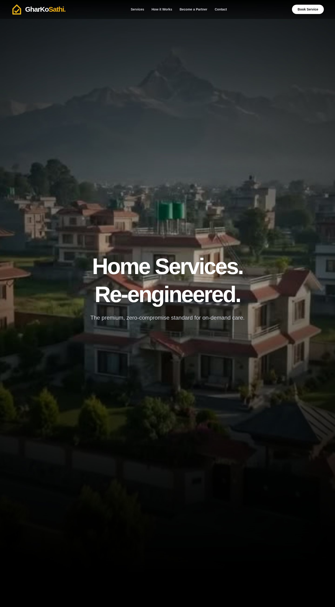

GharKo Sathi
On-demand home services in Kathmandu with KYC-verified professionals, escrow-held payments and a dispute process that both sides can see. Customer app, partner app and an operations console, live on iOS and Android.

Trust was the product.
Booking a plumber or a mason in Kathmandu usually means a phone number from a neighbour and a cash negotiation at the door. If the work is bad, there is no record, no recourse and no way to check who entered the house.
The product had to solve trust before it could solve scheduling: prove who the professional is, hold the money until the job is accepted, and give both sides a paper trail when something goes wrong.
Two apps, one operations console.
- Customer flow: service selection, transparent estimate, KYC-matched professional, live job tracking and escrow release on completion.
- Partner app: onboarding with document capture, KYC review states, job offers, earnings and payout history.
- Operations console: KYC queue, live jobs, dispute dashboard, refunds and city/service configuration.
- Dispute path with evidence upload, a decision record and an audit trail attached to the job.
How it is put together
customer app (Flutter) partner app (Flutter)
│ │
└────────── HTTPS ─────────────┘
│
NestJS API (REST, JWT + server-side sessions)
│ │ │
PostgreSQL payment rails document store
(Prisma ORM) eSewa / Khalti (KYC, private)
│
operations console (React)
│
notifications: SMS + push
Stack
Security and money
- KYC documents are stored outside the public mount and served only through authenticated, authorised endpoints.
- Payments are confirmed server-to-server with the provider before a job is marked paid; the client never decides the amount.
- Sensitive account actions (phone change, payout details, account deletion) require step-up reauthentication.
- Escrow state and dispute decisions are recorded as immutable events, not mutable flags.
Product surfaces

Building something in this category?
We can walk you through the architecture, the payment integration and the failure cases on a call, including the parts that were hard.